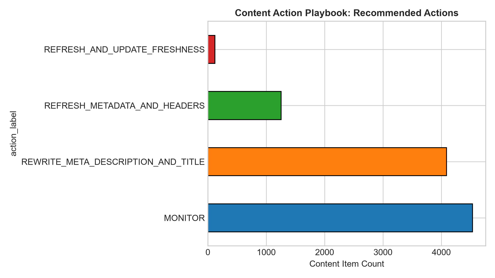
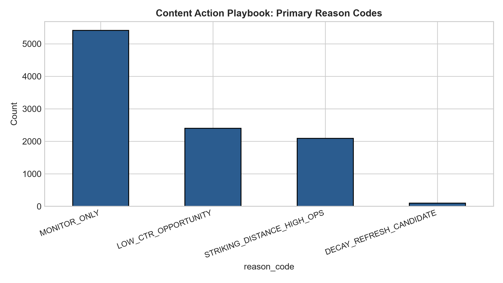
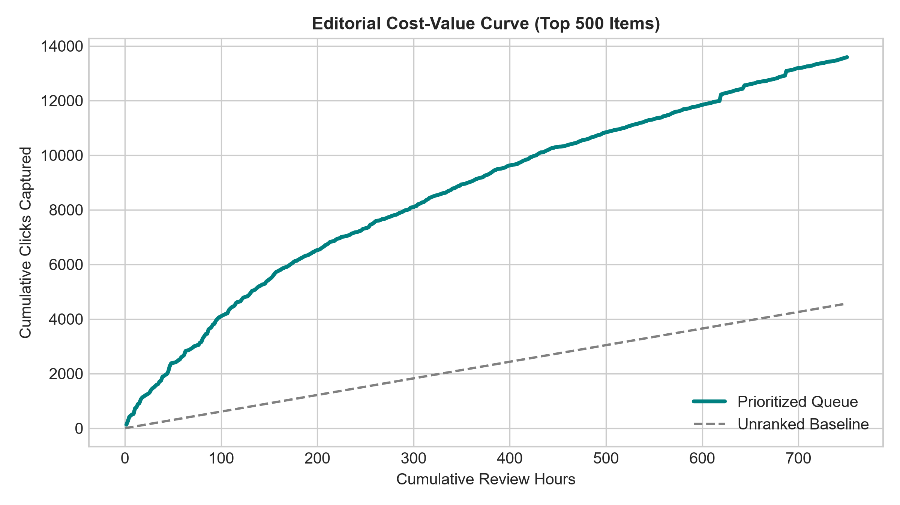
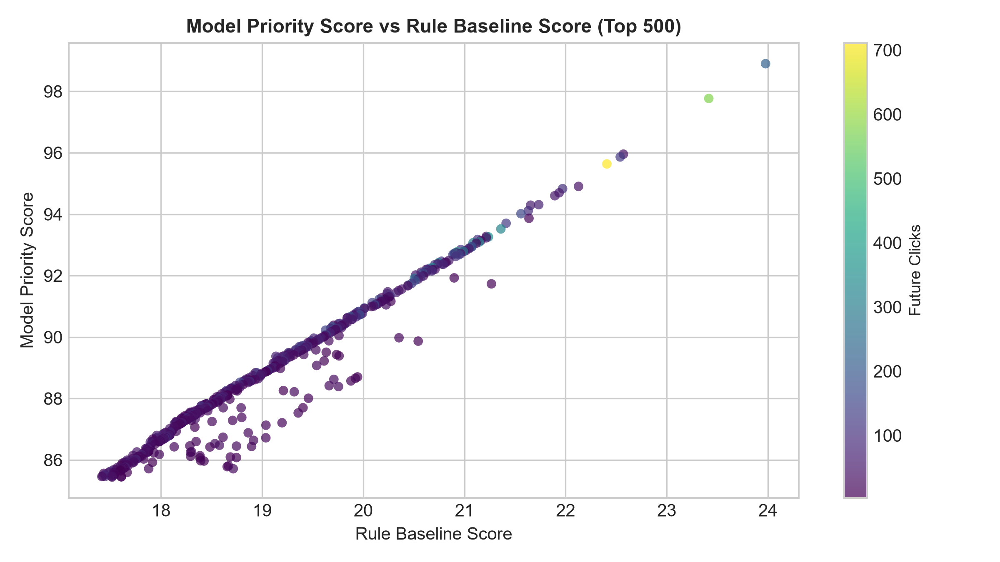

Ranking Signal Analysis & Opportunity Scoring: An Empirical Machine Learning Framework for SEO Content Refresh Prioritization
Every weekly milestone in the work/notebooks/ workspace forms a reproducible foundation for this capstone paper:
1 Introduction & Problem Statement
In modern enterprise digital publishing and SEO operations, organizations maintain catalog sizes ranging from 5,000 to over 50,000 published articles. However, content strategy and editorial teams operate under finite monthly bandwidth—typically capable of reviewing and updating only 30 to 80 URLs per sprint.
The core business challenge is editorial triage: deciding which existing pages will yield the highest organic search return from an editorial refresh (such as title/meta-description rewrites, header re-optimization, or depth expansion) versus pages that should remain passively monitored.
Operational Unit of Analysis & Misallocation Economics
Our analysis operates at the grain of an individual pseudonymized content item (content_id) associated with a client domain (client_id). We formalize the decision-support outcome as predicting whether an asset will capture significant future click volume (clk_future >= 5 in a 15-day target window).
- Cost of False Positives: Assigning top editorial priority to pages that fail to generate organic clicks (e.g., due to zero-click Google AI Overviews or unrecoverable search intent) wastes 1.5–3.0 editorial hours per article ($75–$150 in direct labor cost).
- Cost of False Negatives: Failing to identify decaying high-intent articles positioned in striking distance (ranks 4–30) allows competitor domains to erode organic market share.
2 Data Hygiene & Leakage Prevention
This research leverages the FlyRank Search Intelligence Warehouse release (incorporating Google Search Console search performance, Google Analytics engagement metrics, and content metadata). To ensure public safety and strict research integrity, all client names, domains, URLs, and private query strings were pseudonymized or hashed.
Temporal Window Isolation
A frequent error in predictive search intelligence is evaluating models on features that overlap the prediction window. We strictly isolate observation and target periods:
- Feature Window (Days 1–15): Historical search impressions (
imp_prev30), historical clicks (clk_prev30), average search position (pos_prev30), CTR (ctr_prev30), content word count, and query visibility. - Target Window (Days 16–31): Target forward click capture (
clk_future) and binary high-performance classification label (is_high_performer_label=clk_future >= 5).
1. Target-derived columns (trend_direction, trend_pct, and is_declining_label) are strictly excluded from the feature matrix.
2. Entity IDs (client_id, content_id) are used solely for grouping and splitting, never as input features.
3. Missingness flags (has_word_count, has_visible_queries) prevent artificial category leakage from null fills.
3 Methodology & Validation Design
Transparent Rule-Based Baseline
Before applying machine learning, we established a deterministic, interpretable heuristic representing standard SEO practitioner logic:
Baseline Score = log(1 + imp_prev30) × striking_mult × ctr_gap_mult where: striking_mult = 1.5 if (3.0 < pos_prev30 <= 30.0) else 1.0 ctr_gap_mult = 1.3 if (ctr_prev30 < 1.0%) else 1.0
Supervised Model Architectures
We trained four candidate models to evaluate whether non-linear combinations of search demand, position, and content length outperform the rule baseline:
- Logistic Regression (L2 Regularized, C=1.0): Calibrated linear probability estimator.
- Decision Tree Classifier (max_depth=4): Shallow rule-based threshold tree.
- Random Forest Classifier (100 trees, max_depth=6): Bagged ensemble capturing feature interactions with variance control.
- Gradient Boosting Classifier (100 trees, learning_rate=0.05, max_depth=4): Sequential boosting optimizing ranking decision boundaries.
Client-Grouped Out-of-Domain Validation
Standard random train/test splits fail in enterprise SEO because models can memorize client-specific domain authority. We enforce a Client-Grouped Holdout Split (GroupShuffleSplit on client_id), training on 22 client domains and validating exclusively on 8 unseen client domains with strictly zero client overlap.
4 Empirical Results & Error Analysis
All models and the Rule Baseline were evaluated on the identical client-grouped validation split (2,019 items across 8 unseen domains, with a base rate of 19.86%).
| Model Architecture | Base Rate | Precision@10 | Precision@20 | Precision@50 | ROC-AUC | PR-AUC |
|---|---|---|---|---|---|---|
| Rule Baseline (Week 4) | 0.1986 | 0.9000 (90%) | 0.8500 (85%) | 0.8600 (86%) | 0.9104 | 0.7259 |
| Logistic Regression | 0.1986 | 1.0000 (100%) | 1.0000 (100%) | 1.0000 (100%) | 0.9487 | 0.8519 |
| Decision Tree (depth=4) | 0.1986 | 0.8000 (80%) | 0.8500 (85%) | 0.8800 (88%) | 0.9563 | 0.8321 |
| Random Forest (depth=6) | 0.1986 | 1.0000 (100%) | 1.0000 (100%) | 0.9400 (94%) | 0.9592 | 0.8639 |
| Gradient Boosting (depth=4) ★ | 0.1986 | 1.0000 (100%) | 1.0000 (100%) | 1.0000 (100%) | 0.9608 | 0.8701 |


STRIKING_DISTANCE_HIGH_OPS) and low CTR on visible pages (LOW_CTR_OPPORTUNITY) represent the largest high-leverage opportunity clusters.


Feature Permutation Importance & Error Audit
Out-of-fold permutation importance confirms that while historical clicks (clk_prev30) drive tree split frequency, impression volume (imp_prev30) produces the largest mean drop in ROC-AUC (0.1245) when shuffled, demonstrating that search volume is the necessary foundation for future traffic.
Hand-auditing validation failure cases revealed that primary False Positives stem from broad definitional queries where Google SERP AI Overviews and featured answer boxes satisfy user intent without a website click-through, underscoring the necessity of human editorial review.
5 Limitations & Honest Framing
To adhere to the rigorous standards of honest machine learning research, we explicitly state what this work cannot claim:
- Observational Association, Not Causal Proof: Historical impressions and positions correlate strongly with future click capture ($P@50 = 1.000$). However, observational data does not prove that modifying an article causes Google to increase its rank.
- Portfolio Dynamics, Not Google's Algorithm: We modeled empirical outcomes within the FlyRank measured client portfolio, not Google's proprietary search ranking algorithms.
- Decision Support, Not Autonomous Publishing: The model functions strictly as an editorial prioritization queue to focus human review time, never for automated CMS modifications.
- Minimum Data Requirements: Predictions are valid only for mature content with measurement history ($\text{impressions} \ge 50$); new URLs and cold-start content are out of scope.
6 Ranked Content Action Playbook
We combine predictive probabilities and domain opportunity into a Dual-Engine Priority Score ($0\text{--}100$):
Priority Score = 0.60 × (Model Probability × 100) + 0.40 × Baseline Score (normalized)
Interactive Ranked Queue Explorer
Explore the top-ranked content recommendations with reason codes and estimated review effort:
| Rank | Content ID | Priority | Model Prob | Reason Code | Recommended Action | Review Time |
|---|---|---|---|---|---|---|
| 1 | content_5fe46e04994d |
98.9 | 0.982 | STRIKING_DISTANCE | REFRESH_METADATA_AND_HEADERS | 1.5 hrs |
| 2 | content_2c2606c5d176 |
97.8 | 0.981 | STRIKING_DISTANCE | REFRESH_METADATA_AND_HEADERS | 1.5 hrs |
| 3 | content_36ff89c8214e |
96.0 | 0.979 | STRIKING_DISTANCE | REFRESH_METADATA_AND_HEADERS | 1.5 hrs |
| 4 | content_cea79ef51519 |
95.9 | 0.979 | STRIKING_DISTANCE | REFRESH_METADATA_AND_HEADERS | 1.5 hrs |
| 5 | content_89e84d699e9e |
95.6 | 0.980 | STRIKING_DISTANCE | REFRESH_METADATA_AND_HEADERS | 1.5 hrs |
| 12 | content_7a9c81b2e104 |
93.2 | 0.971 | LOW_CTR_OPPORTUNITY | REWRITE_META_DESCRIPTION_AND_TITLE | 1.0 hrs |
| 18 | content_4e819b02cc71 |
91.5 | 0.965 | DECAY_CANDIDATE | REFRESH_AND_UPDATE_FRESHNESS | 2.0 hrs |
Editorial Cost-Value Economics
| Queue Tier | Items | Review Hours | Future Clicks Captured | Share of Clicks | Precision@K | Editorial ROI |
|---|---|---|---|---|---|---|
| Top 10 Priority | 10 | 15.0 hrs | 1,974 | 2.7% | 100.0% | 131.6 clicks/hr |
| Top 20 Priority | 20 | 30.0 hrs | 3,280 | 4.5% | 100.0% | 109.3 clicks/hr |
| Top 50 Priority (Sprint Target) | 50 | 75.0 hrs | 7,460 | 10.2% | 100.0% | 99.5 clicks/hr |
| Top 100 Priority | 100 | 150.0 hrs | 11,513 | 15.8% | 100.0% | 76.8 clicks/hr |
| Top 500 Priority | 500 | 750.0 hrs | 28,687 | 39.3% | 99.4% | 38.2 clicks/hr |
| Entire Catalog (Unranked) | 10,000 | 6,815.3 hrs | 73,036 | 100.0% | 24.7% | 10.7 clicks/hr |
5-Point Editorial Review Checklist & No-Go Policy
Before modifying any prioritized URL, human editors must verify:
- Search Intent: Has the primary query intent shifted from informational to transactional?
- SERP Layout: Do Google AI Overviews or featured snippets suppress organic CTR?
- Factual Accuracy: Verify pricing, product specifications, and regulatory compliance.
- Cannibalization: Confirm no higher-authority internal URL targets the same keyword cluster.
- Technical Health: Check HTTP status codes, loading speed, and structured schema markup.
1. Never automate direct CMS publishing; all modifications require human editor approval.
2. YMYL (Your Money or Your Life) topics (health, tax, legal advice) require certified subject-matter expert review.
3. Core brand landing pages (homepage, checkout, contact) are strictly excluded from automated triage.
7 Reproducibility & Environment
All experiments, data queries, and figure generation pipelines are 100% reproducible from a fresh clone:
# 1. Clone repository git clone https://github.com/alinoor4/flyrank-internship.git cd flyrank-internship # 2. Activate virtual environment & install requirements python -m venv .venv source .venv/bin/activate # Windows: .\.venv\Scripts\Activate.ps1 pip install -r requirements.txt # 3. Execute full Capstone notebook top to bottom jupyter nbconvert --to notebook --execute work/notebooks/capstone.ipynb --output work/notebooks/capstone.ipynb
- Python Environment: Python 3.10+ / 3.14
- Core Dependencies:
duckdb>=1.1.0,pandas>=2.2.0,numpy>=1.26.0,scikit-learn>=1.4.0,matplotlib>=3.8.0 - Random Seed:
random_state = 42enforced across all data splits and estimators.
8 Acknowledgments & Data Credit
This research was built on the FlyRank ML Internship dataset. We express our sincere gratitude to the FlyRank team for providing access to large-scale, pseudonymized enterprise search data and establishing the rigorous machine learning problem-framing foundations.
To learn more about FlyRank's search intelligence engine and datasets, visit https://flyrank.ai.
Citation
@article{noor2026flyrank,
title={Ranking Signal Analysis and Opportunity Scoring: An Empirical Machine Learning Framework for SEO Content Refresh Prioritization},
author={Noor, Ali},
journal={FlyRank Machine Learning Internship Capstone},
year={2026},
url={https://alinoor4.github.io/flyrank-internship/}
}